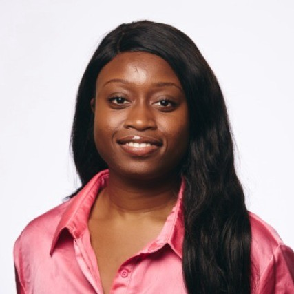
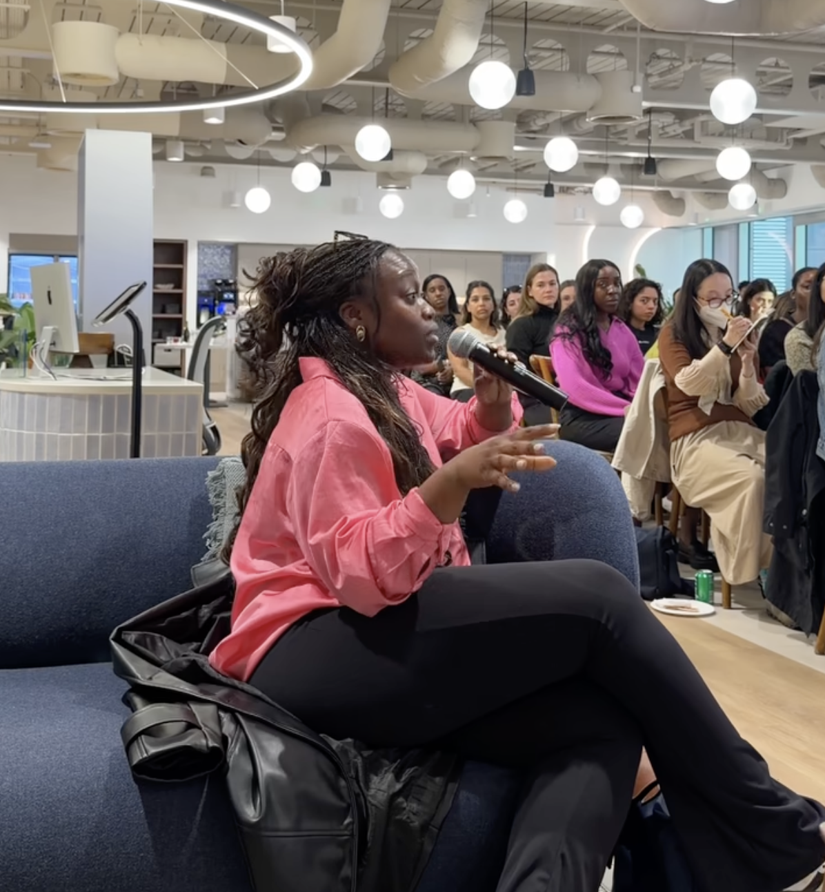
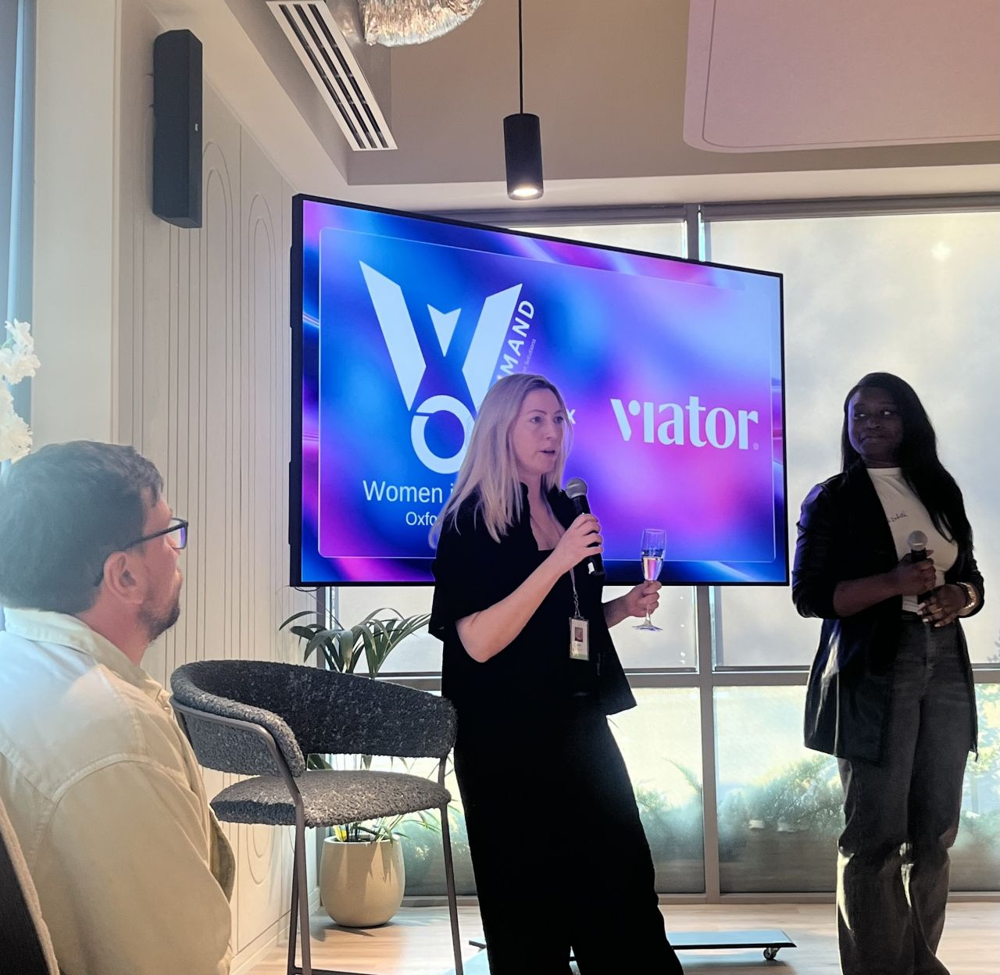
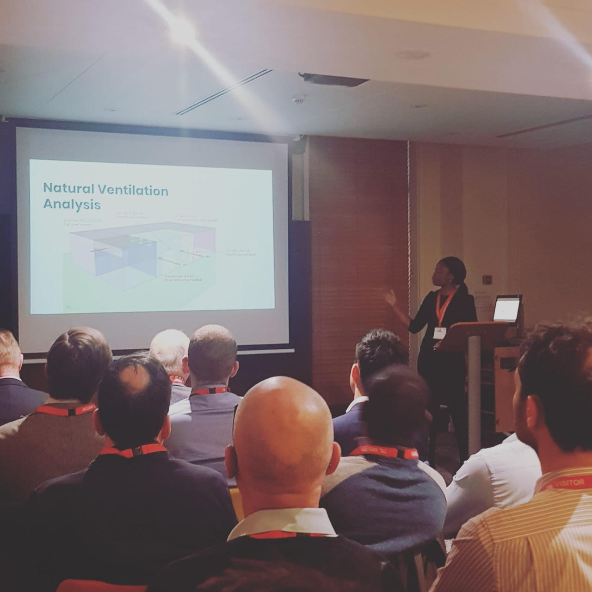

Full-Stack Software Engineer. Formerly a Chartered Mechanical Engineer (CEng, MIMechE). Self-taught into Tech. This is the record of what's followed since.
I spent over five years as a Mechanical Engineer at WSP, a global engineering and infrastructure consultancy, promoted three times — from graduate engineer to senior engineer — before a year as Assistant Project Manager and chartering (CEng, MIMechE) in 2022. Frustrated by how much of that role relied on manual, repetitive processes, I taught myself Python to automate my own workload — chasing invoices, parsing contractor emails, wrangling spreadsheets. That first project is still on GitHub — the actual starting point, not just a line on a CV. It gave me the confidence to leave a career I'd trained years for and switch into tech entirely, around three and a half years ago.
Both roles left their mark. The structured, safety-conscious rigor of mechanical engineering shows up in how I approach system design and code review; the stakeholder management and risk communication I built as a Project Manager now shapes how I lead cross-team migrations and mentor engineers finding their way into the industry.



Since June 2024, I've led the WomenCoders Leadership Team at TripAdvisor — a global initiative supporting women in engineering across the US and UK — and driven improvements to the company's interview process for candidates from non-traditional backgrounds.
I'm also an advocate for AI adoption within my team — running 3 AI learning sessions in 2 months across a team of 12, promoting agentic workflows and tooling to make engineering work more efficient, and sharing that knowledge across teams.
Mentorship runs through both halves of my career: as a STEM Ambassador and Mentor with the Association for BAME Engineers since 2018, I run CV and interview-prep sessions that have reached tens of students. In tech, three to four people I've mentored have switched into cybersecurity and software engineering roles, and three engineers I've guided have passed mechanical engineering chartership on their first attempt. I also create content on breaking into tech, reaching 350+ people with that advice.
I'm also an active member of CodeFirstGirls (since 2022) and GTA Black Women in Tech (since 2026).
Happy to hear from event organisers about speaking opportunities, from award panels, or from anyone considering the same career leap.